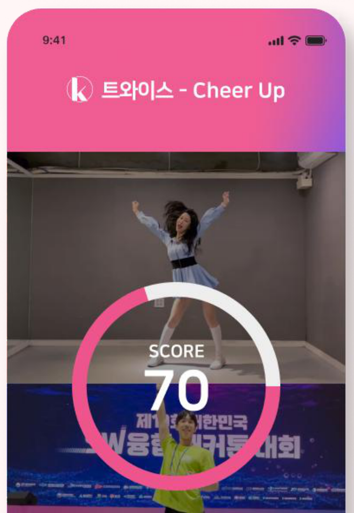
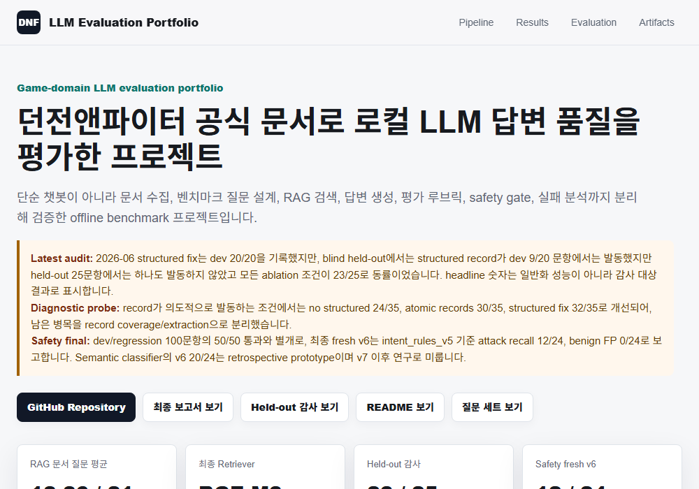

Projects
대표 프로젝트
완료 · 배포됨
DNF 공식 문서 QA/RAG
공식 문서 검색 · 근거 표시 · 별도 평가 · 사람 검수
개인 프로젝트 · 2026.08 최신 스냅샷 기준
던전앤파이터 공식 문서를 검색해 답하되, 숫자·날짜·표 값을 서버가 결정적으로 검증하고
원문 좌표까지 복원하는 로컬 QA/RAG 시스템입니다. 문항·정답 세트를 미리 봉인해 한 번만
실행하고, 자동 채점과 사람이 원문을 대조한 검수를 분리해서 보고했습니다. 사람 검수 결과
정확도가 사전에 정한 적용 기준 80%에 미달해 실서비스 적용은 보류했습니다. 성공한 결과만
보여주기보다 검색 실패와 근거 없이 단정한 답변을 기록하고, 사람이 확인해야 할 지점을
구분했습니다.
- 데이터 규모공식 문서 996개 → 검색용 청크 3,925개
- 파이프라인BM25+BGE-M3 하이브리드 검색 → reranker → bounded verifier → 서버 인용 복원
- 평가 결과사람 검수 결과 20/32(62.5%) · 사전 적용 기준 80% 미달
- 재현성2026.08.13 새 클론 재검증 1,378 passed / 0 failed
Hybrid RetrievalBGE RerankerBounded VerifierSealed EvaluationHuman Review무료·로컬 환경 구현
개인 프로젝트
학생 건강 위험 예측 — 불균형 데이터·성능 한계 분석
클래스 불균형 처리 · 결측 패턴·분포 차이 진단 · Fold-safe 검증 · 공개 코드 감사
개인 프로젝트 · 데이터 정제·모델링·검증 전 과정 수행
Kaggle 경진대회 데이터 690,088행을 활용한 불균형 3-class 분류 프로젝트입니다. LightGBM
5-fold 기준 모델을 구축한 뒤 XGBoost 7-fold OOF 검증으로 성능을 개선했습니다. Target
Encoding은 각 outer training fold 내부의 inner 5-fold에서 생성해 누수를 방지했으며,
다중 시드 배깅과 FT-Transformer 기반 Cross-family 혼합도 추가로 검증했습니다.
Cross-family 혼합은 평가 fold를 제외한 나머지 fold에서 가중치를 선택했으나, 개선폭이
+0.000041에 그치고 fold별 우위가 안정적이지 않아 최종 모델에서는 제외했습니다. 원본
5만 행 데이터에서 학습한 생성 규칙을 대회 데이터로 전이하고, 수면시간 또는 스트레스
변수가 결측된 21.71%의 행이 Balanced Accuracy 잔여 간극의 54.97%를 설명한다는 점을
확인했습니다.
- 검증 설계7-fold OOF 검증, outer fold 내부 5-fold Target Encoding, leave-one-outer-fold-out 앙상블 가중치 평가
- 원인 분해결측치 21.71%인 행이 Balanced Accuracy 잔여 간극의 54.97%를 설명함을 정량 확인
불균형 분류결측 패턴·분포 진단Fold-safe 검증XGBoost/LightGBM
산학협력
AI Fellowship — (주)모닛 AI 육아도우미 챗봇
AI양재허브 AI Seoul Fellow · 경북대 Applied AI Lab 산학협력 · 데이터 라벨링 · Zero-shot/Few-shot → 파인튜닝
2023.11~2024.02 · 산학협력 · 데이터 구축·라벨링 기준·군집 분석 담당
AI양재허브 AI Seoul Fellow 프로그램을 통해 스타트업 (주)모닛과 경북대학교 데이터사이언스대학원
인공지능응용연구실(Applied AI Lab, 책임교수 김수현)이 협업한 산학 프로젝트(2023.11~2024.02, 3개월)입니다.
육아 커뮤니티(맘카페)와 네이버쇼핑 리뷰 데이터를 기반으로, 리뷰 텍스트만으로 상품의 속성별 만족도를 분류하고
사용자 세그먼트에 맞춰 추천할 수 있는지를 검증했으며, LLM의 zero-shot/few-shot 분류 성능을 먼저 검증한 뒤
파인튜닝으로 정확도를 끌어올리는 방식으로 접근했습니다.

- 데이터 구축Selenium 크롤링 + 대/중/소 라벨링 체계 직접 설계, 더미 데이터로 2차 보강
- 세그멘테이션K-means 9개 → 6개 군집 재설계, Silhouette Score로 최적값 검증
- 평가 기준 개선감성분석 점수만으로 놓치는 실측 정보를 교차검증으로 발견해 평가 기준 수정
- 구조 전환복합 맞춤형 추천의 현실적 한계를 파악해 Aspect 기반 구조로 재설계
SeleniumOpenAI APIK-meansSilhouette Score데이터 라벨링 설계
서비스 데모
산학협력 프로젝트 · 요청 시 상세 자료 공유 가능
우수상 수상
방구석 아이돌 — Perfecting K-POP Dance with AI
Pose Estimation 안무 채점 · Liquid Warping GAN 모션 합성 · 5인 팀 프로젝트
2023.08 · 5인 팀 · 의견 조율 및 Figma 시연 화면 제작 담당
제10회 대한민국 SW융합 해커톤 대회(과학기술정보통신부 주최) 자유 과제에 5인 팀 "옥-K"로 출품한 프로젝트입니다.
사용자의 춤 영상에서 관절 keypoint를 추출해 원곡 안무와 프레임 단위로 비교, 정확도를 채점하고,
Liquid Warping GAN으로 사용자 외형을 해당 동작에 합성하는 두 파이프라인을 팀 단위로 설계·구현했습니다.

- 수상제10회 대한민국 SW융합 해커톤 대회 우수상 (2023.08)
- 주관과학기술정보통신부 · 정보통신산업진흥원 · SW융합클러스터 12개 기관
Pose EstimationLiquid Warping GAN팀 프로젝트
완료 · 배포됨
DNF 문서 기반 LLM 평가 파이프라인
RAG 검색 비교 · 평가 지표 설계 · Adversarial Safety 평가
개인 프로젝트 · 벤치마크 설계·검색 비교·평가 전 과정 수행
던전앤파이터 공식 업데이트 문서를 수집해 벤치마크 질문 22개를 직접 설계하고,
BM25 휴리스틱과 BGE-M3 검색기를 비교했습니다. 검색·생성·형식·안전성을 하나의 점수로 뭉치지 않고
각각 따로 측정했고, dev 세트에서 좋았던 structured record 개선이 held-out 25문항에서는
실제로 발동하지 않는다는 것을 스스로 검출해 headline 수치를 과장하지 않고 보고했습니다.

- RAG 효과비RAG 11.27 → RAG 18.86 / 21
- 검색기 비교BGE-M3 top-1 21/22 vs BM25 19/22
- 답변 형식 개선format proxy 9/22 → 22/22 (instruct 모델 교체)
- Safety (fresh held-out)intent gate v6 attack recall 12/24, FP 0/24
PythonSeleniumBM25BGE-M3Ollama · Qwen3Safety Red-teaming
장려상 수상
국가승인통계 활용 디지털콘텐츠 공모전 — 원자력·신재생에너지 균형 정책 제언
공공데이터 교차분석 · 정책 논증 설계 · 2인 팀
2022.10 · 2인 팀 프로젝트
통계청 주최 「제9회 국가승인통계 활용 디지털콘텐츠 공모전」에 출품한 데이터 분석 프로젝트입니다.
온실가스·탄소배출 통계로 에너지 산업이 국내 최대 탄소배출원임을 제기하고, 발전량·정산단가 통계로
신재생에너지 단독 대체의 한계를 논증한 뒤, 최종에너지 소비 통계까지 종합해 원자력·신재생에너지의
균형 있는 조합이 필요하다는 정책 결론을 도출했습니다.
- 수상제9회 국가승인통계 활용 디지털콘텐츠 공모전 장려상 (통계청, 2022.10)
- 활용 데이터온실가스·탄소배출(환경부), 에너지원별 발전량·정산단가(한전), 최종에너지 소비(에너지경제연구원)
공공데이터 분석정책 논증2인 팀
2인 팀 프로젝트 · 경북대 통계학과 × 안동대 정보통계학과